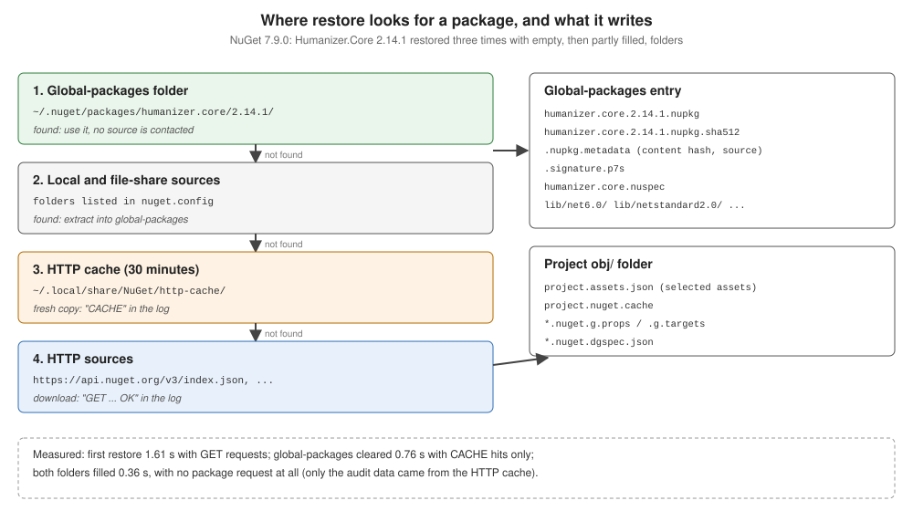

How Package Installation Works
|
This content was generated with the assistance of AI and should be verified against the official documentation before being relied on in production. |
"Installing" a package in a PackageReference project means two things: recording a PackageReference in the
project file, and restoring — downloading the package once per machine into a shared folder and recording, in
obj/project.assets.json, which of its files the project uses. Nothing is copied into the project folder. This page
follows one package, Humanizer.Core 2.14.1, through that process with NuGet 7.9.0 (.NET SDK 10.0.402).
What a .nupkg is
A .nupkg is a ZIP file:
unzip -l ~/.nuget/packages/humanizer.core/2.14.1/humanizer.core.2.14.1.nupkgHumanizer.Core.nuspec
logo.png
[Content_Types].xml
_rels/.rels
lib/net6.0/Humanizer.dll
lib/net6.0/Humanizer.xml
lib/netstandard1.0/Humanizer.dll
lib/netstandard1.0/Humanizer.xml
lib/netstandard2.0/Humanizer.dll
lib/netstandard2.0/Humanizer.xml
package/services/metadata/core-properties/575b1b6c57e04bb3a2b576d5ac444577.psmdcp
.signature.p7s-
Humanizer.Core.nuspec— the manifest: ID, version, dependencies per framework, metadata. -
lib/<tfm>/— assemblies per target framework. Other conventional folders areref/,runtimes/<rid>/,build/,buildTransitive/,contentFiles/,analyzers/,tools/. -
[Content_Types].xml,_rels/,*.psmdcp— Open Packaging Conventions parts. -
.signature.p7s— the repository signature nuget.org adds to every package (Signed Packages and Trust Policies).
Building packages is covered in the Publishing and Distributing Libraries group.
Source: Package installation process.
Acquiring the package
For each package and version the graph needs, NuGet looks in this order:

The order is visible at normal verbosity. A project with <PackageReference Include="Humanizer.Core" Version="2.14.1" /> was restored three times, with NUGET_PACKAGES and NUGET_HTTP_CACHE_PATH pointing at empty
folders:
dotnet restore -v nFirst restore (both folders empty):
GET https://api.nuget.org/v3-flatcontainer/humanizer.core/index.json
OK https://api.nuget.org/v3-flatcontainer/humanizer.core/index.json 49ms
GET https://api.nuget.org/v3-flatcontainer/humanizer.core/2.14.1/humanizer.core.2.14.1.nupkg
OK https://api.nuget.org/v3-flatcontainer/humanizer.core/2.14.1/humanizer.core.2.14.1.nupkg 66ms
Installed Humanizer.Core 2.14.1 from https://api.nuget.org/v3/index.json to ~/inst-gp/humanizer.core/2.14.1 with content hash lQKvtaTDOXnoVJ20ibTuSIOf2i0uO0MPbDhd1jm238I+U/2ZnRENj0cktKZhtchBMtCUSRQ5v4xBCUbKNmyVMw==.
GET https://api.nuget.org/v3/vulnerabilities/index.json
…
Restored ~/inst/Inst.csproj (in 1.61 sec).Second restore, after deleting only the global-packages folder:
CACHE https://api.nuget.org/v3-flatcontainer/humanizer.core/index.json
CACHE https://api.nuget.org/v3-flatcontainer/humanizer.core/2.14.1/humanizer.core.2.14.1.nupkg
Installed Humanizer.Core 2.14.1 from https://api.nuget.org/v3/index.json to ~/inst-gp/humanizer.core/2.14.1 with content hash lQKvtaTDOXnoVJ20ibTuSIOf2i0uO0MPbDhd1jm238I+U/2ZnRENj0cktKZhtchBMtCUSRQ5v4xBCUbKNmyVMw==.
Restored ~/inst/Inst.csproj (in 756 ms).Third restore, with both folders filled: no package request at all, only the audit data from the cache, 356 ms.
-
GET/OKlines are network requests;CACHElines are served from the HTTP cache, whose entries count as fresh for 30 minutes.--no-http-cachebypasses it. -
A package already in the global-packages folder is used without contacting any source — for an exact version. A floating version or a range without a lower bound makes NuGet ask every source for its versions first.
-
Local folder and file-share sources are checked before HTTP sources.
-
Package source mapping decides which sources may serve which package IDs before any of this happens (Package Sources and Source Mapping).
-
The audit requests (
vulnerabilities/index.json) come from NuGetAudit (Auditing Packages for Vulnerabilities).
The global-packages entry
~/.nuget/packages/humanizer.core/2.14.1/
.nupkg.metadata
.signature.p7s
humanizer.core.2.14.1.nupkg
humanizer.core.2.14.1.nupkg.sha512
humanizer.core.nuspec
lib/net6.0/Humanizer.dll lib/net6.0/Humanizer.xml
lib/netstandard1.0/… lib/netstandard2.0/…
logo.pngThe folder and file names are the lower-cased ID and the normalized version. .nupkg.metadata records where the
package came from and its content hash:
{
"version": 2,
"contentHash": "lQKvtaTDOXnoVJ20ibTuSIOf2i0uO0MPbDhd1jm238I+U/2ZnRENj0cktKZhtchBMtCUSRQ5v4xBCUbKNmyVMw==",
"source": "https://api.nuget.org/v3/index.json"
}The content hash is what lock files store and compare (Lock Files and Locked Mode). The global-packages folder is append-only: once a version is there, restores trust it, so never edit files inside it.
Source: .nupkg.metadata file, NuGet version map.
project.assets.json and asset selection
Restore writes obj/project.assets.json with, among others, a libraries section (every package in the graph, with its
path and file list) and a targets section (for each target framework and RID, which of those files the project uses):
"targets": {
"net10.0": {
"Humanizer.Core/2.14.1": {
"type": "package",
"compile": { "lib/net6.0/Humanizer.dll": { "related": ".xml" } },
"runtime": { "lib/net6.0/Humanizer.dll": { "related": ".xml" } }
}
}
}For a net10.0 project NuGet chose lib/net6.0 — the nearest compatible framework in the package — over
netstandard2.0. The asset groups are:
| Group | Package folder | Used for |
|---|---|---|
|
|
what the compiler references |
|
|
what is copied to the output and loaded |
|
|
platform-specific files, chosen by RID at publish or run time |
|
|
|
|
|
source or content files added to the project |
|
|
Roslyn analyzers and source generators |
A package with native code shows the other groups. SQLitePCLRaw.lib.e_sqlite3 2.1.4, from the NETSDK1206 example on
Troubleshooting SDK Errors:
"SQLitePCLRaw.lib.e_sqlite3/2.1.4": {
"type": "package",
"compile": { "lib/netstandard2.0/_._": {} },
"runtime": { "lib/netstandard2.0/_._": {} },
"build": { "buildTransitive/net7.0/SQLitePCLRaw.lib.e_sqlite3.targets": {} },
"runtimeTargets": {
"runtimes/alpine-arm/native/libe_sqlite3.so": { "assetType": "native", "rid": "alpine-arm" },
"runtimes/alpine-arm64/native/libe_sqlite3.so": { "assetType": "native", "rid": "alpine-arm64" },
"runtimes/alpine-x64/native/libe_sqlite3.so": { "assetType": "native", "rid": "alpine-x64" },
…
}
}_._ is an empty placeholder meaning "compatible, but nothing to reference". Which groups a project actually takes is
controlled by IncludeAssets/ExcludeAssets/PrivateAssets
(PackageReference); the build then reads
the assets file in ResolvePackageAssets
(How a .NET Build Works).
Finding and evaluating packages
Before adding a dependency, check it on nuget.org or with dotnet package search:
-
Search syntax —
<property>:<term>searches one field:id:(substring),packageid:andowner:(exact),tags:,author:,description:,title:,summary:,version:(owner:dotnet tags:json). -
Supported frameworks — the package page’s "Frameworks" tab lists the frameworks it has assets for (
net6.0,netstandard2.0for Humanizer.Core 2.14.1), and whethernet10.0is computed as compatible. -
Prerelease — nuget.org lists them by default;
dotnet package searchanddotnet package addskip them unless--prereleaseis given. -
Evaluate — downloads and recent versions, the owner (and whether the ID prefix is reserved), the source repository, the licence, vulnerabilities and deprecation shown on the page.
-
Licence — the
licenseexpression in the.nuspec(Apache-2.0,MIT) or a licence file inside the package.
Common mistakes
-
Expecting package files in the project folder — they are in the global-packages folder; the assets file points there.
-
Editing or deleting single files in the global-packages folder — delete the whole version folder, or clear it.
-
Debugging a "stale" package without knowing about the HTTP cache —
--no-http-cacheordotnet nuget locals http-cache --clear. -
Assuming
netstandard2.0assets are used on .NET 10 — the nearest framework (herenet6.0) wins.